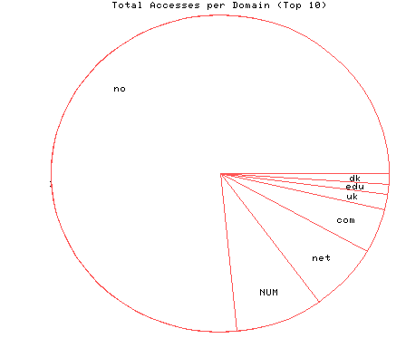
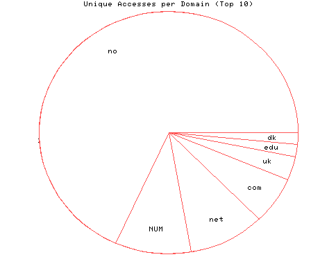

HTTP Server Domain Statistics
Covers: 08/07/95 to 10/14/95 (69 days).
All dates are in local time.
1 level, sorted by number of requests, 7 unique domains.
291 : 43 : 10/14/95 : Norway (.no) 32 : 6 : 10/13/95 : (numerical domains) 26 : 6 : 10/14/95 : Network (.net) 17 : 4 : 10/13/95 : US Commercial (.com) 6 : 2 : 08/24/95 : United Kingdom (.uk) 4 : 1 : 09/01/95 : US Educational (.edu) 4 : 1 : 08/26/95 : Denmark (.dk)

Statistics generated at Mon Oct 16 10:20:01 MET 1995, (C) Oslonett AS, 1995.